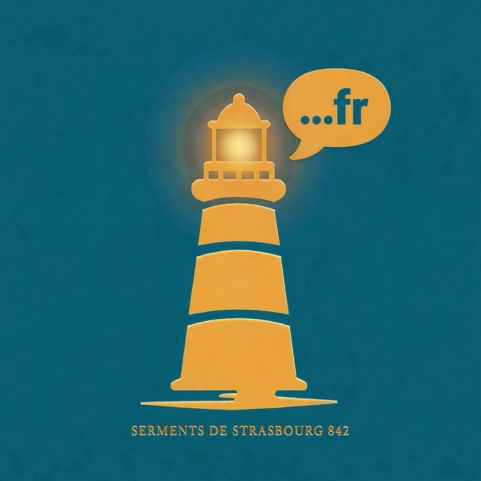

Le guide des francophones en Floride
Les commerces, services et sorties où l'on vous accueille en français, réunis dans une seule application. Pour les résidents francophones, les snowbirds et les voyageurs.
Plus de 250 entreprises et services où l'on parle français, en 15 catégories : restauration, santé, finances, construction, hébergement, automobile, immobilier et plus.
185 commerces géolocalisés : touchez une épingle pour voir la fiche, appeler ou vous y rendre.
Les événements francophones, triés par proximité puis par date, avec une sélection « À ne pas manquer ».
La météo locale en direct selon votre position, et des petites annonces immobilières : chalets, condos et maisons.
Application Android — parution sur Google Play en cours.
Une question, un commerce à proposer ? Écrivez-nous : contact@francophare.com